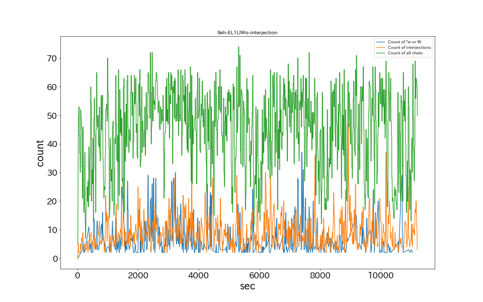
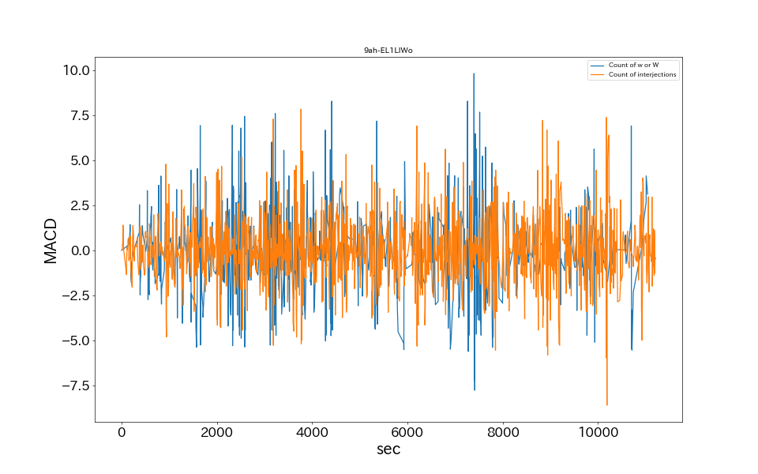

着替え中に忍び寄る影を察知できないくノ一がいるらしい【NinNinDays/にじさんじ/月ノ美兎】
15秒あたりのコメント数

MACDによるバースト検知

コメント数によるバースト検知
草、wのチャット数ランキング
No.
時間
草、wチャット数
1
7365
37
2
7410
31
3
3195
30
4
2295
29
5
10665
29
感動詞のチャット数ランキング
No.
時間
感動詞チャット数
1
8895
47
2
10140
37
3
7800
36
4
6165
30
5
5220
29
MACDによるバースト検知
No.
時間
感動詞チャット数
1
10305
7.58
2
7425
7.43
3
5595
6.93
4
3450
6.92
5
5610
6.87